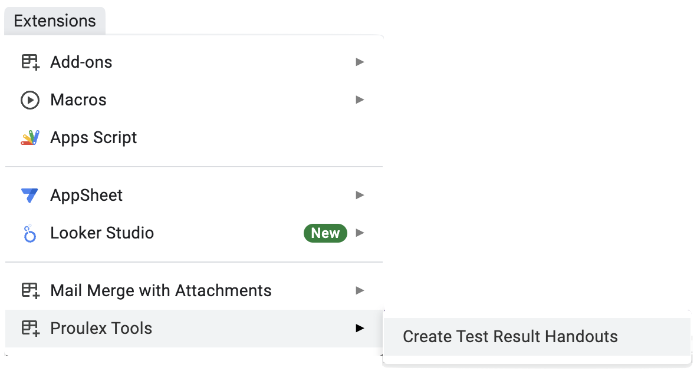
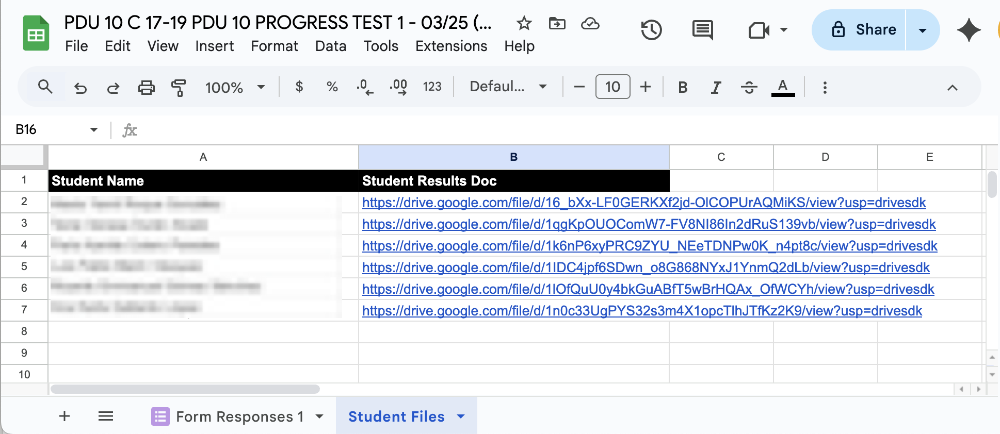

PROULEX TOOLS
This Google Sheets Add-on is for Proulex Teachers (www.proulex.com). Teachers can use it to share individual test results with virtual students.

In Proulex, we give virtual students Speax Progress Tests through Google Forms. Once students finish the tests and the teacher grades them, it's nice to review the results with students in class, but what's the easiest method to share them with virtual students?
Using the Proulex Tools Add-on for Google Sheets, you can generate individual student PDF files to share with your virtual students. With one click, the Add-on creates URL's (links) for each student. Then you send the URL's to each individual via WhatsApp.

INSTALL
Write
USAGE
Once you've completed a Speax Progress Test using a Google Form and graded the student tests in Google Forms, follow these steps.
- Open the Google Form > Click "Responses" > Click "View in Sheets"
- In your results Sheet > Click "Extensions" > "Proulex Tools" > "Create Test Result Handouts" 
- In your results Sheet > Click the Sheet (Tab) named "Student Files" 

A new Google Sheet will open with all the student results.

The sheet shows one URL for each student. The URL is a PDF document that only contains that students results.
SUPPORT
If you found a bug in the Proulex Tools Google Sheets Add-on or need support, you can open a request to the developer using the link below.
Open a support requestPRIVACY POLICY
Effective Date: March 30, 2025
1. Introduction
This Privacy Policy describes how Proulex Tools Add-on handles user data within the Google Workspace environment. We are committed to protecting your privacy and ensuring transparency in our data practices.
2. Data Collection and Usage
No Personal Data Collection: Proulex Tools does not collect any personally identifiable information (PII) from users. We do not track or store any user data outside of the Google Workspace environment.
Google Sheet Data Access: The Add-on requires access to your Google Sheet to read the data necessary for its functionality. This data is used solely to generate a new file with formatted data and store it into a new file on your Google Drive.
Google Drive File Creation: The Add-on creates a new file within your Google Drive to store the processed data. This data is stored within your own Google Drive and remains under your control.
In-Memory Processing: Any data accessed from your Google Sheet is processed in-memory during the execution of the Add-on. No data is persistently stored on our servers or external databases.
3. Data Security
Google Workspace Environment: Proulex Tools operates entirely within the Google Workspace environment. Therefore, data security is primarily handled by Google's robust security infrastructure.
Limited Access: The Add-on requests only the minimum necessary permissions to perform its intended functions.
No External Data Transfer: We do not transfer or transmit your data to any third-party servers or services.
4. Google API Services User Data Policy
Your use of Proulex Tools is also subject to the Google API Services User Data Policy, including the Limited Use requirements.
https://developers.google.com/terms/api-services-user-data-policy
5. Changes to This Privacy Policy
We may update this Privacy Policy from time to time. Any changes will be posted within the Add-on description or on a designated webpage. We encourage you to review this policy periodically.
6. Contact Information
If you have any questions or concerns about this Privacy Policy, you can contact the developer using this link. Open a support request